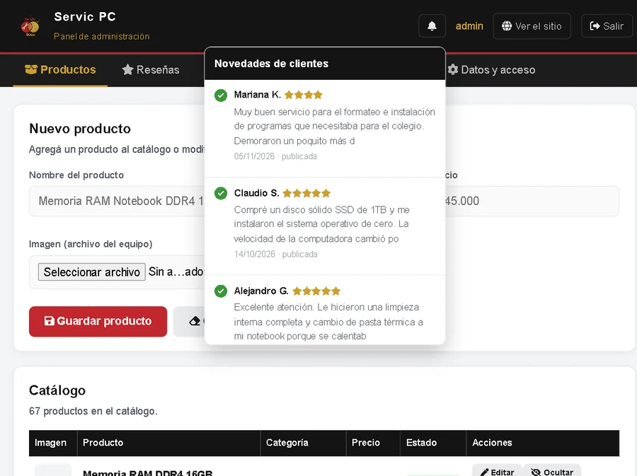

Un panel solo para el dueño Sin tocar una línea de código

- 🔔Campana de avisos: verde si la reseña es buena, roja si es mala.
- ✅Aprobar o rechazar cada opinión
- 📦Agregar, editar y borrar productos
- 📷Subir fotos de los trabajos
Las reseñas llegan a una planilla de Google: se pueden ver y editar desde el celu.
¿Con qué la fabriqué? Tres lenguajes, cada uno con su trabajo
HTML5 · la estructura
<header> logo <nav> menú
<section> contenido <footer> contacto
<section> contenido <footer> contacto
CSS3 · la apariencia
.tarjeta { border-radius: 12px }
@media (max-width:700px) { ... } /*celular*/
@media (max-width:700px) { ... } /*celular*/
JavaScript · el comportamiento
function filtrar() { ... }
function cambiarColor() { ... }
function cambiarColor() { ... }
Font Awesome
Google Sheets
Apps Script
GitHub Pages
WebP
Los colores del sitio están medidos del logo: negro, rojo y dorado.
Servic
PC
Página web de un taller
de reparación de computadoras
Proyecto de Programación Web
6to Año · Técnico en Informática
Claudio Sosa · Wanda, Misiones
Escaneá el código
y mirá la página
funcionando
y mirá la página
funcionando